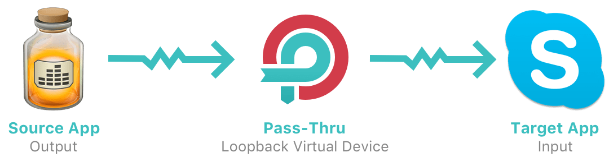
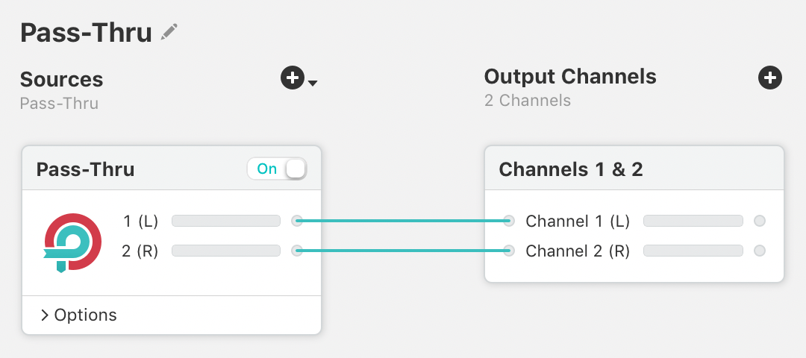
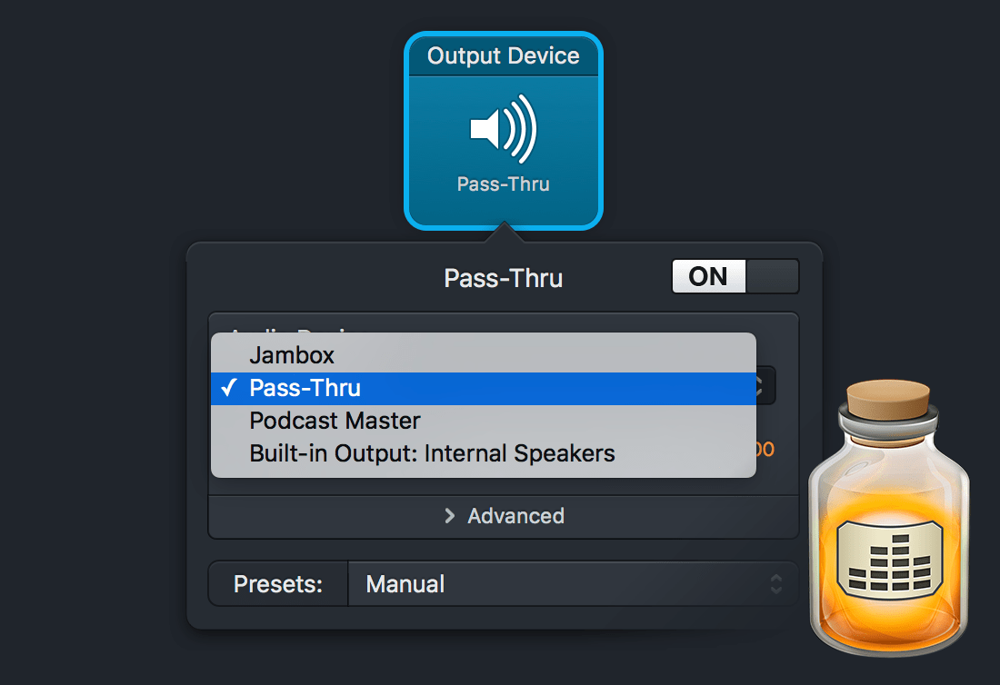
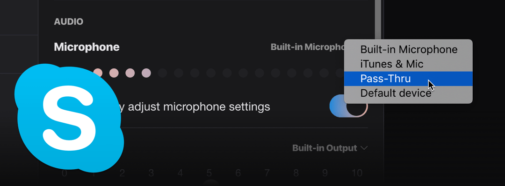
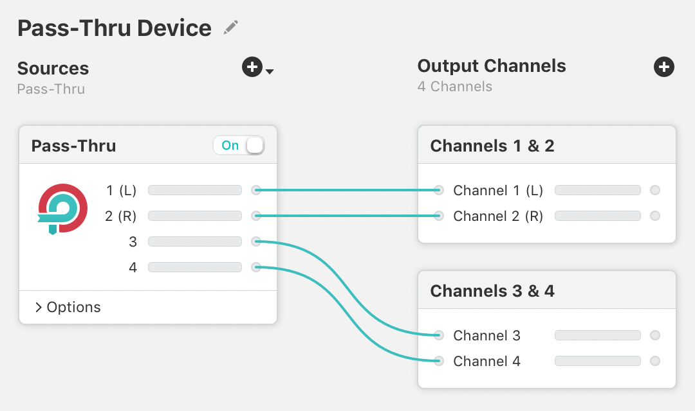

Pass-Thru Devices

Loopback virtual audio devices have the ability to function as both audio inputs and audio outputs. While all virtual devices will appear as inputs, the ability to appear as an available output is accomplished with Loopback's Pass-Thru source. Appearing as an output device makes it possible to pipe audio directly between two applications. We refer to devices doing this as “pass-thru devices”.
Some users may have previously used the tool “Soundflower” for similar audio routing between applications. Loopback modernizes the necessary infrastructure, providing a reliable method of passing audio directly between applications.
Creating a Simple Pass-Thru Device
Any Loopback virtual audio device can function as a pass-thru device, as long as the Pass-Thru source is present and enabled. When you make a new Loopback virtual audio device (by clicking the New Virtual Device button), the Pass-Thru source is automatically included. If you like, you can rename the device to something like “Pass-Thru”, as we've done here. That's the extent of configuration that's required inside of Loopback.

A simple pass-thru device
This pass-thru device will appear on the system as both an audio output and an audio input. Any application with an audio output selector can feed audio into the pass-thru device, while any application with an audio input selector can pull it out.
Adding Audio to the Pass-Thru
To add audio to a pass-thru device, select it from the audio output selector inside the desired source application. Below, we sent audio into the device by adjusting an Output block in our audio recording tool Audio Hijack.

Audio Hijack setting “Pass-Thru” as an audio output device
With this setting, audio from the Audio Hijack Session in question will be sent into the pass-thru device.
Receiving Audio From the Pass-Thru
To receive audio from the pass-thru device, just select “Pass-Thru” as the audio input inside the desired source application. Now any audio being sent to “Pass-Thru” will be pulled in by your application.

Skype selecting “Pass-Thru” as its audio input
Above, we've set the VoIP app Skype to pull audio out of the pass-thru device.
Adjusting the Channel Count
When you add output channels to your Loopback virtual audio device, the Pass-Thru source will automatically gain channels as well. Those channels will be mapped one-to-one to the output channels, automatically. In this way, your virtual device will be able to take in up to 64 channels of input, and pass it through to 64 channels of output.

A Pass-Thru device with 4 channels
It's unlikely you'd want anything but a one-to-one mapping of inputs to output channels, but do note that you can remove and reconfigure channel mappings if you desire.
Removing and Adding Pass-Thru Functionality in a Virtual Device
When a new Loopback device is created, it includes the Pass-Thru source by default. With this source on, the device will appear as an output device, as well as an input device.
If you don't want a device to appear as an output on your Mac, you can toggle the Pass-Thru source off, or delete it entirely from the device.
If you wish to restore a device's ability to be an output, just toggle the Pass-Thru source back on, or re-add it using the Add Source menu at the top of the Sources column.
The Pass-Thru Source in Other Virtual Devices
It's generally best to use a Loopback virtual audio device as either a pass-thru, with no other sources, or as a fully configured device which skips the pass-thru functionality. Using your Loopback virtual audio devices in one of these two ways is the best way to avoid any confusion as far as your audio routing goes.

A Pass-Thru device

A fully configured device
That said, Loopback doesn't prevent you from using the Pass-thru source alongside other configured audio sources. If you do, audio from the included sources will be pulled into the Loopback virtual audio device. If any other application has the Loopback virtual audio device set as an output, that application's audio will flow into the device as well.